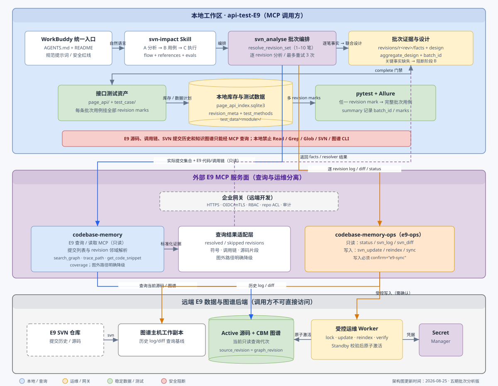

基于 E9 SVN 影响分析与接口自动化测试系统，将「影响分析 → 用例选取/生成 → 自动化测试 → 报告分析」全流程产品化，封装为 WorkBuddy 可直用的技能（Skill），并支持代码与知识图谱远端化部署。

codebase-memory 提供代码/调用链和批次 revision 解析所需的只读信息，codebase-memory-ops 提供逐 revision log/diff、状态及需确认的同步/重建运维能力；区间 resolver 缺少读取 MCP 能力时不转用运维 MCP 或本地 SVN。五期在本地编排逐笔 facts/design、aggregate_design、多 revision marks 和 Allure 批次追踪。可编辑源文件见 docs/e9-remote-mcp-architecture.drawio。| # | 需求 | 实现方式 | 分期 |
|---|---|---|---|
| 1 | 系统做成可导入的技能 / 流程 / Agent | 嵌入式 Skill（合并 AGENTS.md，自包含） | 一期 |
| 2a | 接口覆盖校验：URL 是否已封装 | 参考 E10，脚本扫 URL 入 sqlite3，关系型关键字查询 | 二期 |
| 2b | 功能覆盖与快速选用例 + 生成新用例 | mcp 调用链 + revision mark + SVN 提交描述元数据 | 二期 |
| 3 | 输入环境/账号快速 AI 自动化测试 | 先读本地配置；复用确认或填写模板 | 一期 |
| 4 | 测试通过后询问是否提交用例仓库（Git） | GitLab 交付根含 WorkBuddy Skill；确认后提交 | 一期 |
| 5 | 输出测试报告 + 结果分析 | 最多 10 个只读子代理；主会话校验并回写 Allure | 一期 |
| 6 | 历史用例 / 知识图谱远端部署 | MCP 原生 MCP（二期本地已完成）+ 企业网关远端部署验收（归远端开发）；替代引擎先 PoC | 二期本地远端开发 |
| 7 | Git 分支管理 Skill | skill-creator 新增 git-branch；默认分支可配置，新分支从主分支拉取 | 三期 |
| 8 | 工作区收敛到 api-test-E9 | SKILL 提炼 + CLI 独立 + code_repo 走 MCP；提交真实 config.json | 三期 |
| 9 | MCP 与新增用例前置数据自动化 | 后端图谱 + 前端操作反查 + Network/HAR 证据 + 行为级断言 + SKILL 流程治理 | 四期本地 |
| 五期 | 多笔 SVN 提交联合影响分析与针对性接口用例 | 读取 E9 信息 MCP 解析实际集合；逐笔 attempt/事实/设计 → aggregate design → A+/A++ 审核 → 多 revision mark 用例 | 五期 |
.workbuddy/skills/ 并随 GitLab 项目分发；本仓库不部署 MCP、不保存 E9 图谱，只调用外部版本化 MCP 获取代码关系。四期聚焦端点、前端操作反查、前置数据自动化和行为级断言；五期新增多笔提交批次分析，详见 docs/五期开发/E9五期需求分析.md 与 docs/五期开发/E9五期开发计划书.md。外部 MCP 服务及其部署由“远端开发”负责，详见 docs/远端开发/E9远端开发计划书.md。| 维度 | Skill（嵌入式） | Agent | 标准 AI 流程（AGENTS.md） |
|---|---|---|---|
| 触发方式 | 关键词匹配（如「分析 r349084」） | 独立运行、持续监听 | 靠项目通用指令 |
| 载体 | .workbuddy/skills/<name>/SKILL.md | 独立 Agent 定义 | 就是 AGENTS.md |
| 自包含程度 | 较高（可含全部指令） | 最高（自带工具集） | 低（依赖项目上下文） |
| 与 WorkBuddy 集成 | 原生 | 需额外配置 | 通用但无特化 |
| 团队分发 | 随 Git 仓库自带，clone 即生效 | 需单独管理 | 项目自带 |
.workbuddy/skills/ 下的所有技能，无需额外安装。.workbuddy/，用户 clone 后打开 WorkBuddy 即自动可用。description 字段控制触发词，说「分析 r349084」才激活，说「帮我写请假流程」不误触发。api-test-dwp）svn-impact 必须由 skill-creator 创建与维护，不得手改 SKILL.md 后不登记；并强制配套两层 eval：
| 层级 | 文件 | 评估什么 | 是否调模型 |
|---|---|---|---|
| 触发层 | trigger_eval_set.json | query 是否触发 svn-impact（正例/负例） | 是 |
| 工作流契约层 | workflow_eval_set.json | 触发后是否正确分流、读必读文档、产预期交付物、无禁止副作用 | 否 |
| 静态校验 | validate_eval_set.py | JSON schema、ID 唯一、必读文档存在、分支齐全 | 否 |
| Git 审计 | git_readiness_check.py | 只读检查提交阻断项（明文账号、运行时产物、不规范技能名），不打印凭据 | 否 |
触发层正例分支须覆盖：阶段 A（标准 / skip-update）、阶段 B（新建封装 / 复用）、阶段 C（复测）、快速测试（复用 / 换环境）、报告分析（有失败 / 无失败）、接口覆盖校验、用例选取（按功能关键词 / 按 revision）；负例须覆盖：HEAD/范围/多版本、UI 自动化、前端代码、纯单元测试、数据库迁移、解释性提问、报告样式。Windows runner 需兼容 select() 限制，支持 checkpoint 续跑，超时/无信号标 INCONCLUSIVE 不折算为不触发。
skill-creator 重做 svn-impact，将 AGENTS.md 全部内容合并进 SKILL.md 使其自包含、成为唯一入口，核对去除对 AGENTS.md 的依赖；同时落出 evals/ 两层 eval 与静态校验/Git 审计脚本。验收：静态校验通过、Git 审计在干净工作副本返回 0、触发 eval 有基线成功率。inventory.py 用正则 url\s*=\s*['"]([^'"]+)['"] 扫 URL 字面量，结果只写 output/_inventory.json，不持久化、不跨 revision 复用、不抽 HTTP method/docstring/注释元数据，查询靠 JSON 字符串匹配。对「URL 是否已封装」这类确定性问题，mcp 图谱查询属于杀鸡用牛刀。
E9 接口方法由 AI 按 api-test-E9/docs/api_test_case_spec.md 模板规范编写，格式固定（url 单独提取为变量、self.post/get 统一调用、三行元数据注释），扫描规则比 E10 简单很多，不照搬 E10 规则集：
| 维度 | E10（历史存量，写法多样） | E9（强制模板，规则简化） |
|---|---|---|
| URL 提取 | 4 条规则（quoted_http_url / concat_http_url_path / url_assignment_path_literal / url_assignment_format_path_bare_query） | 1 条：url\s*=\s*['"](/[^'"]+)['"]，限定 / 开头绝对路径 |
| HTTP method | 3 条（requests.request / requests.get|post / .send_msg） | 1 条：self\.(get|post|put|delete)\s*\(，BaseAPI 统一入口 |
| 元数据注释 | # Author / # Create Date / # Update Date | # Author / # Create Date / # IsAI（标识 AI 编写，非 Update Date） |
| docstring 描述 | 抽 desc: 前缀行 | 抽 docstring 首行非空行 |
api-test-E9/tools/scan_page_api.py；索引库 api-test-E9/tools/page_api_index.sqlite3；DB 工具 api-test-E9/skill_utils/api_index_db.py（参考 E10 api-test-dwp 的 skill_utils/ 但规则集重写）。(api_url, http_method) 做存在性 diff。@allure.step 装饰器提取。sys.stdout.reconfigure 避免 Windows cp936 崩溃。| 表 | 字段 | 说明 |
|---|---|---|
| api_methods（主表） | id, api_url, http_method, api_name, api_desc, class_name, class_bases, file, line, author, create_date, is_ai, mtime | (api_url, http_method) 唯一；api_url 归一化（去 query、补前导 /、去尾 /）；is_ai 取自 # IsAI: 注释 |
| index_metadata | generated_at, repo_root, scanner_version, scanned_files, total_methods, unique_paths, scan_mode | 扫描元信息 |
覆盖判定（阶段 A 产出 endpoints 后，对每个 endpoint）： SELECT api_name, class_name, file, line, http_method FROM api_methods WHERE api_url = ? AND (http_method = ? OR http_method = '') 命中 → has_wrapper=true，复用封装；未命中 → 阶段 B 新建
api-test-E9/tools/page_api_index.sqlite3，随仓库版本管理。output/_inventory.json 降级为给 AI 读的脱敏快照；判定走 sqlite3。python -m svn_analyse inventory --refresh-index。(api_url, http_method) 唯一无重复；扫描器不写绝对路径；Windows + 中文路径不崩。用例的功能覆盖不能靠 URL 关键字。用例标题、步骤描述是自然语言；一个用例可能调用多个接口方法覆盖一个功能点；同一 URL 可被多个用例以不同断言覆盖。原方案「双索引交叉分析」只解决 URL 维度，功能维度必须走 mcp 调用链 + 用例语义元数据。
变更符号（来自 facts.json，如 WfForceOver）
→ 外部 MCP impact(version, WfForceOver) → 受影响 Action / HTTP 端点
→ 对每个受影响符号，在 E9 外部图谱反向查 callers
→ 命中的 test_xxx 即「已有用例覆盖该符号」
→ 结合 docstring 标题 + 步骤描述判定测试点
→ 输出：已覆盖测试点 + 未覆盖测试点（需新建用例）
mcp init/sync。用例编辑提交时打 @pytest.mark.r349094，并备注 SVN 提交描述如 no.4952725 优化等保分保的功能。这两部分是选取与执行的关键：revision mark 回答「用例因哪个提交而生」，commit 描述回答「该提交改了什么功能」，从而支持「按功能关键词反查 revision → 按 mark 选例 → 执行」。
| 元数据 | 来源 | 本轮需求 |
|---|---|---|
| revision mark | 用例文件内 @pytest.mark.r349094 | 继续采集（已有 _MARK_RE），并入 sqlite3 |
| SVN 提交描述 | svn log -r REV commit message | 新增采集，并入 sqlite3，与 mark 关联 |
| 用例标题 | 测试函数 docstring 首行 | 继续采集 |
| 关联表 | 字段 | 说明 |
|---|---|---|
| revision_meta | revision, commit_msg, commit_author, commit_date, functional_keywords, analyzed_at, report_path | commit 描述与功能关键词，支持模糊匹配反查 revision |
| test_methods | id, test_name, file, marks, title, calls, line | 用例与 revision mark 关联 |
用户: 跑一下等保分保相关的用例 → revision_meta.commit_msg LIKE '%等保分保%' → 命中 r349094 → 用 mark r349094 查 test_methods → 用例清单 → pytest -m r349094 执行 用户: r349094 改了什么，有没有用例覆盖 → revision_meta 查 commit_msg → facts.json 查受影响符号 → 外部 MCP callers 反查 E9 图谱 → 已有用例 → sqlite3 test_methods 补 docstring 标题 → 输出：已有 N 个用例覆盖 X 测试点；未覆盖 Y 测试点
page_api 方法。test_case 用例。design.json 同时产出，互为补充。revision_meta 模糊查到 revision；给定 revision 能用 mark 在 test_methods 查到全部关联用例；mcp callers 反查结果与 mark 关联结果一致（差异需说明）。用户: 快速测试
AI: 只读 config.json，绝不显示密码
配置完整 → "是否复用环境 xxx、管理员 xxx、2 个普通成员？"
配置缺失/用户要换环境 → 返回填写模板并等待：
测试环境地址: XXX
管理员账号: XXX
管理员账号密码: XXX
普通成员一账号: XXX
普通成员一密码: XXX
用户: 确认复用，r349084
AI: 分析 → 用例实现 → 测试 → 并行报告分析 → 重建 Allure
全部用例通过！ 本次新增/修改的文件： - api-test-E9/test_case/test_workflow_case/test_force_over_case.py - api-test-E9/page_api/workflow_api/workflow_base_api.py 是否需要提交到测试用例仓库？(Y/N) # 用户确认后（在 api-test-E9 目录，它是独立 Git 仓库） cd api-test-E9 git add page_api/ test_case/ tools/ docs/ .workbuddy/ skill_utils/ git commit -m "test: add regression tests for r349084" git push
api-test-E9/ 是独立 Git 仓库（已执行 git init），大部分开发（接口封装、用例、扫描器、skill_utils、Evals）都在其内完成，不依赖项目根目录。仓库根的 svn_analyse/、docs/、code_repo/ 仅作分析与源码引用，不入 api-test-E9 的 Git。WorkBuddy Skill 随 api-test-E9/.workbuddy/skills/ 分发，clone api-test-E9 即得 skill。向公司内部 GitLab 提交真实 config.json 与 test_data/account.json（同事 clone 即用真实配置快速测试）；仍通过 .gitignore 排除 report/、runtime/、logs/、.mcp/、__pycache__/ 和会话记忆，但不排除凭据与账号文件。先冻结指定运行的 allure-results/*-result.json 清单和 SHA-256，再按规范化失败指纹去重、分片。主会话按 min(10, 唯一失败数, 可用并发) 调度子代理；没有失败时不启动子代理。
每个子代理只读脱敏、截断的输入 JSON，不能读配置、执行命令或写文件。所有输出由主会话校验后回写为受管 AI 分析 attachment，随后重新生成 Allure HTML。
pytest → 冻结 manifest（UUID + SHA-256 + 脱敏错误）
→ 按 fingerprint 去重，最多 10 个只读子代理
→ 主会话校验 schema、hash、分类和敏感信息
→ 原子替换 result.json，追加/替换一个 AI 分析附件
→ allure generate → summary.json
分类：environment / credentials_config / dependency /
test_data / test_code / product_defect / unknown
=== 测试结果 === 版本: r349084 | 总计: 5 | 通过: 4 | 失败: 1 | 唯一失败类型: 1 失败用例分析： ✗ test_force_over_removed_from_todo → 测试环境连接超时；先确认环境可访问且已部署目标版本。 Allure: 每条失败结果内可查看「AI 分析」附件
现有 E9 索引由 MCP 1.5.0 构建，已支持 mcp serve --mcp、sync 与 JSON 查询；因此不应从零开发查询型 MCP。其原生 MCP 是本地 stdio，不是带认证的远程 HTTP 服务。
codebase-memory-mcp 提供更广的 Java Hybrid LSP、语义检索和 15 个 MCP 工具，但同样只有 stdio transport，且 watcher/detect_changes 只支持 Git；它不能自行更新 SVN 工作副本。推荐保留 MCP 生产索引，另把替代引擎放入真实 E9 revision 的 PoC。
WorkBuddy → 企业 HTTPS MCP Gateway（认证 / ACL / 审计）
→ MCP 原生 MCP / SDK 查询池
→ 异步更新作业：锁 → svn update → graph sync → 验证 → 原子激活
只允许 request_refresh(repo_id, revision?)，禁止任意 shell、路径、SVN URL 和凭据参数。
完整的可编辑架构图见 docs/e9-remote-mcp-architecture.drawio；详细调研、比较、状态机和验收项见 E9_快速测试_报告并行分析_远端图谱优化方案.md。
| 层面 | 结论 |
|---|---|
| Skill 分发 | 技能放 Git 仓库 .workbuddy/ 下，clone 即生效，非常优雅 |
| 多版本索引 | 不同分支建不同 .mcp/ 目录，或用环境变量切换 |
| 自动构建 | 服务器 build_all.sh：svn checkout + mcp init |
| 测试执行 | 本地 clone 后直接跑 pytest，无需远端参与 |
| 用例开发 | WorkBuddy + Skill 指导，AI 读分析结果→生成用例→写本地 |
| 团队协作 | 用例 Git 推送，他人 pull 即得最新用例 |
docs/五期开发/E9五期开发计划书.md。远端网关、受控刷新和多版本 generation 仍由独立的“远端开发”路线管理。分析 Revision r349181 到 Revision r349184，提交说明：no.4996246 解决了流程导入不会更新明细表配置的问题；区间语义始终是闭区间，但是否存在中间 revision 必须由读取 MCP 实际查询确认。分析 Revision r349181、Revision r349184，提交说明：...；只分析用户列出的 revision，不推断中间编号，也不要求连续。快速测试 Revision r349181 到 Revision r349184，提交说明：...；配置确认后按阶段 A → A+ 功能用例 → A++ 人工定稿 → B → C → 报告分析执行，任一门禁失败即停止后续写入。B-A <= 10。读取 E9 信息 MCP 对 A、B 各查询左右最多 10 笔，合并去重后过滤闭区间；端点无效、缺少边界完整性证据、实际超过 10 笔或只找到一笔时提示修改。A=B 继续走单笔流程。batch_message；SVN 原始提交说明逐笔保留。单笔提示词继续兼容，不强制批次说明。revisions/r<revision>/facts.json 与 design.json，再生成批次 aggregate_design，保留 source_revisions、resolver 证据和跨提交结论。部分报告不得进入阶段 B。output/batch_r349181_r349184/，包含批次 facts/design/reverse_lookup、报告和逐笔子目录。accepted 时停止，不进入阶段 A。stage_b_gate=false，不写接口代码。svn-impact SKILL；不新建第二个顶层批次 SKILL，避免 MCP 安全、功能用例、前置数据、阶段门禁和报告规则分叉。references/common-analysis-contract.md；功能用例设计统一遵守 references/functional-case-design.md，批次先合并影响模块再按同一规范设计。analysis_worker：单笔入口和批次逐 revision 都调用同一事实/反查逻辑；批次只新增 resolver、调度、聚合、batch_id 和多 mark。@pytest.mark.r349181 @pytest.mark.r349182 @pytest.mark.r349183 @pytest.mark.r349184
每条批次接口用例同时挂全部 revision mark。执行四个 mark 中任意一个，均运行该批次完整接口用例；也支持生成经校验的 r349181 or r349182 or r349183 or r349184 表达式。batch_id 和 analysis_run_id 用于 Allure、inventory、summary 和报告追踪，不作为 pytest marker。
解析分支名（省略 → config.json 的 git.default_branch = master）
├─ git branch --list 已存在 → git checkout
└─ 不存在 → 询问「是否从主分支新建」
├─ 确认 → git fetch → git checkout -b <name> <default_branch>
└─ 否定 → 终止，零改动
git status --porcelain 非空 → 先询问（stash / 放弃 / 取消），不静默丢弃。git check-ref-format 校验，拒绝非法名。git 配置块，不读取 / 输出账号密码。api-test-E9/.workbuddy/skills/。api-test-E9/E9_svn_analyse/。svn_analyse 不是 SKILL 私有——被单元测试套件模块级 import、命令行人工入口使用、二期还要扩展 select/check-consistency，故保持独立 Python 包，落位 E9_svn_analyse/svn_analyse/；SKILL 只带 SKILL 私有脚本。
{
"_usage": "E9 测试环境与 Git 分支配置。字段顺序：base_url、git、admin、employee1~5。",
"base_url": "https://test.example",
"git": { "default_branch": "master", "remote_name": "origin" },
"admin": { "user_name": "…", "password": "…" },
"employee1": { "user_name": "…", "password": "…" }
}
真实 config.json 与 test_data/account.json 改为提交公司内部 GitLab，同事 clone 即用。
skill-creator 重做 svn-impact，核对 SKILL.md 完全自包含、去 AGENTS.md 依赖（小）api-test-E9 独立 Git 仓库的 .gitignore、config.example.json 和远端 origin（git init 已完成）（小）skill-creator 新增 git-branch 技能，配套首批触发成功率 evals（小）api-test-E9；分析 CLI 独立包迁入 E9_svn_analyse/（中）common-analysis-contract.md、functional-case-design.md、前置数据、Allure 和报告分析规则，不建设平行流程。skill-creator 规范更新 svn-impact SKILL、flow、evals，并同步 AGENTS、README、runner 和需求文档。docs/远端开发/E9远端开发计划书.md，不与本地四期任务混用。